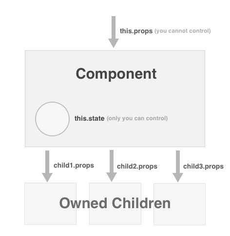

Start Hacking with React
A Simple Example
@jsx React.DOMenables XML syntax known asjsx.- The
Reactmodule allows for creation and rendering of React components. msgis a React component instance, constructed using XML syntax.React.renderComponentrenders the react content into the document.
Behind the Scenes
Fig 1: Simple Example of React Usage
/**
* @jsx React.DOM
*/
var React = require('React');
var msg =
<div class="outerDiv">
<span>hello</span>
</div>;
React.renderComponent(msg, document.getElementById('someId'));
Behind the Scenes
The previous example was very straightforward except for the use of
XML syntax. The inclusion of @jsx React.DOM accomplishes
two things.
- Tells the build system to compile XML syntax into standard javascript function calls.
-
Ensures that
divandspanare functions that are in scope. In fact, all standard DOM tags (such asimgandulare also treated this way).
Obviously, javascript isn't the most attractive way to specify
declarative structures. The XML syntax will be used for the
remainder of this tutorial. Additionally, require calls and calls to
React.renderComponent will be ommited from
examples.
Fig 2: Example of compiler output
/**
* @jsx React.DOM
*/
var React = require('React');
var div = React.DOM.div;
var span = React.DOM.span;
var msg =
div({
className:"outerDiv",
children: [
span({
children: ['hello']
})
]
});
React.renderComponent(msg, document.getElementById('someId'));
Mobile Development
If developing for mobile, ensure that React is listening to touch events before performing rendering. This only needs to be done once. Everything else is exactly as it would be on desktop.Fig 2.5: Supporting mobile
React.initializeTouchEvents(true);
React.renderComponent(yourComponent, document.getElementById('someId'));
JSX Development Environment
- Vim already supports the
jsxsyntax out of the box. - If you prefer Emacs, JS2 mode works well.
- For Sublime Text, you can use the
excellent Facelime
tools which adds syntax highlighting and inline editor linting of
jsx. - Arc lint correctly supports
jsxsyntax.
Types of Components application building blocks
DOM Components such as div and span.
DOM components are always in scope when including @jsx
React.DOM in the first docblock comment. All DOM components
support children in addition to standard DOM
attributes class, href, etc. The only thing to
remember, is that DOM attributes should be expressed in camelCase (onClick).
Fig 4: DOM Component attributes
var fbUrl = "www.facebook.com";
var btn = <a href={fbUrl} class="butButton"> Visit Facebook </a>;
Composite Components such as Typeahead and LeftNav
ReactCompositeComponents are "custom" components.
Composite components are not automatically "in scope" like
ReactDOMComponents. The tag name will need to be
defined as a variable in the scope. By convention, each
ReactCompositeComponent is a commonJS module.
Remember: Composite components must be in scope before use.
Fig 5: Usage of COMPOSITE COMPONENT
// Suppose Typeahead is an instnace of ReactCompositeComponent
var Typeahead = require('Typeahead');
// Typeahead has chosen to accept a "selected" attribute
// and children.
var myTypeahead=
<Typeahead selected="jordanjcw" >
{something.dataset}
</Typeahead>;
Let's Build a Component from scratch
The following tutorial shows you how to define a new component type
called LikeToggler.
The LikeToggler will render an image and allow the user to
toggle the like status on the image. See Image 1 to the right for a
screenshot of the final result.
To create a new component type, we must specify:
- The structure of the component - what is it composed of, and how it should be rendered.
- How it encapsulates state, and how that state changes over time.
- The way in which user interactions may influence state changes.
Note: React favors composition over inheritance as a means of abstraction.
Image 1: Final Result

1. Begin the tutorial
All of the plumbing for this tutorial has been set up for you in www/trunk. Simply edit the main tutorial javascript file and refresh your browser. (See Figure 6 to the right).
Fig 6: Editing the tutorial
vim ~/www/html/js/components/ReactTutorial/ReactTutorial.js Open http://yourSandbox.facebook.com/intern/reacttutorial
2. A New Component Shell
Here, we create a new component called LikeToggler by
making a call to React.createClass. We pass a
javascript object that describes the methods to include in the new
class. render is the most important method, and is the
only one required. It describes the structure of your
component.
Remember: render should never have side effects.
Remember:
When returning jsx blocks, parenthesis guard
against ASI.
Fig 7: basic component definition
var LikeToggler = React.createClass({
render: function() {
return (
<div>
Welcome to the tutorial. Implement LikeToggler here!
</div>
);
}
});
3. Add Richer Structure
Here, we've added a header component and a picture of Boo. We've also placed a class on the outermost div to give the component some style. In your tutorial file, change yourrender
function to match Figure 8.
Fig 8: Richer structure
var LikeToggler = React.createClass({
render: function() {
return (
<div class="LikeToggler">
<h5>Toggle your like.</h5>
<img src="https://graph.facebook.com/boo/picture" />
</div>
);
}
});
4. Add Statefulness
Let's make our app interactive! We'll allow the user to "Like" Boo through our component's interface. In order to do so, we'll want to track that state in our component internally.
Add a method calledgetInitialState to your component.
getInitialState should return a javascript object that
represents your component's initial state. We'll return an object
with likes set to false to indicate that
the user does not initially like Boo.
Fig 9: Beginning statefulness
var LikeToggler = React.createClass({
getInitialState: function() { // <--New method here
return {likes: false};
},
render: function() {
return (
<div class="LikeToggler">
<h5>Toggle your like.</h5>
<img src="https://graph.facebook.com/boo/picture" />
</div>
);
}
});
5. Set Up User Interactions.
- All DOM components support attributes and event handlers just as you would expect (but are specified in the camelCase form).
-
Add a new like toggler
spanin your rendered output. -
Add a new
divin your rendered output to display the current like status. -
Add a new member function that will handle the click on that new
like toggler. Call this method
doToggle. -
Set the
onClickattribute of thespanto be the new member. -
Place an alert inside of the
doTogglehandler to confirm that your click is wired up correctly.
Remember: Always specify DOM attributes in their camelCase form.
Fig 10: Setting up user interactions
var LikeToggler = React.createClass({
getInitialState: function() {
return {likes: false};
},
doToggle: function(event) {
// What shall we do here?
},
render: function() {
return (
<div class="LikeToggler">
<h5>Toggle your like.</h5>
<img src="https://graph.facebook.com/boo/picture" />
<div class="btn" onClick={this.doToggle}>
Like Boo
</div>
<div></div>
</div>
);
}
});
6. Change State.
We need to accomplish the following when the user clicks.
- Toggle our internal state field's
likesfield. - Change the content of the toggler
divfrom "Like Boo" to "Unlike Boo" - Change the content of the
spanfrom empty to "You like this."
You might be tempted to search for the DOM nodes whos content you
wish to change, and force them to change. However, React provides a
more powerful abstraction to help you express the dynamics of changing
content over time. In react, we change our state fields via a call to
this.setState. Then, we express render
as a function of this.state at all points in time
- for an arbitrary state. Nothing else is needed!
Here's how that plays out in our example:
First, We set our next state's likes field to an
inversion/toggle of our current likes (Line 8).
Then, we make our like toggler button's content is an expression
that is a function or an arbitrary state:
<div class="btn" onClick={this.doToggle}>
{this.state.likes ? 'Unlike Boo' : 'Like Boo'}
</div>
Finally, we do the same with the span's content
<span>{this.state.likes ? 'You Like This.' : ''}</span>
React guarantees that when state is updated, these expressions
will be reevaluated and the underlying DOM structures will be reconciled.
To be clear, you can put any expression in terms of
this.state inside of render. There are
essentially no limitations. Consider the
render function to be a constraint that you specify
and that React will always satisfy.
Fig 11: Changing State
var LikeToggler = React.createClass({
getInitialState: function() {
return {likes: false};
},
doToggle: function(event) {
this.setState({likes: !this.state.likes});
},
render: function() {
return (
<div class="LikeToggler">
<h5>Toggle your like.</h5>
<img src="https://graph.facebook.com/boo/picture" />
<span>{this.state.likes ? 'You Like This.' : ''}</span>
<div class="btn" onClick={this.doToggle}>
{this.state.likes ? 'Unlike Boo' : 'Like Boo'}
</div>
</div>
);
}
});
7. Add attributes or props
There's something lacking from our LikeToggler
component. Components such as div and span
accept attributes (such as href and
class), but currently, our component is instantiated as
follows, without attributes:
var myLikeToggler = <LikeToggler />;
Now suppose we want to control the entity being liked.
var myLikeToggler =
<LikeToggler
name="Boo"
imgSrc="http://graph.facebook.com/boo/picture"
/>;
This is extremely easy to do! Inside of the render
method, all attributes are accessible through a special member called
this.props. See the Figure 12 for the complete component.
It's worth taking a close look at the last span's
content. Recognize how the content depends on two separate pieces of
data, from two completely different locations (props
and state). Any time either of these data
change, the content of that span will always be
reconciled to the expression specified.
<div class="btn" onClick={this.doToggle}>
{(this.state.likes ? 'Unlike ' : 'Like ') + this.props.name}
</div>
Fig 12: Supporting Attributes
var LikeToggler = React.createClass({
getInitialState: function() {
return {likes: false};
},
doToggle: function(event) {
this.setState({likes: !this.state.likes});
},
render: function() {
return (
<div class="LikeToggler">
<h5>Toggle your like.</h5>
<img src={this.props.imgSrc} />
<span>{this.state.likes ? 'You Like This.' : ''}</span>
<div class="btn" onClick={this.doToggle}>
{(this.state.likes ? 'Unlike ' : 'Like ') + this.props.name}
</div>
</div>
);
}
});
Properties and State ownership of information
Note: The terms attributes and props used interchangably.
Ownership:
When you look at render, anywhere you see tags
<...> there exists an implication of "ownership".
Meaning that whatever instance renders, also "owns"
those components that are rendered. For example, in Figure 13, we
define a new component type LikeTogglerWrapper that is
composed of the LikeToggler that we previously
defined.
The LikeTogglerWrapper instance clearly owns the
LikeToggler component. The
LikeTogglerWrapper is only thing thing that determines
the props (or attributes) of the
LikeToggler. Furthermore, it is the only thing that
determines its very existence.
Fig 13: new component
var LikeTogglerWrapper = React.createClass({
render: function() {
return (
<LikeToggler
imgSrc="https://graph.facebook.com//picture"
name="jwalke"
/>
);
}
});
Control Of Information:
Clearly, our new component is somehow "in charge" of the
LikeToggler, so it makes sense to use the term "owner".
However, there's still one thing it's not in charge of - the
internal state of the LikeToggler.
state and props are both simple packages
of information, but they are distinct in one critical aspect
- control.
-
You control your
this.state. You are the only one that should ever updatethis.state. You never need to ask permission to update your own state because you are in control of it. -
You do not control your
this.props. Your props are controlled by the same entity that instantiated you - that is to say that yourthis.propsare controlled by your owner. Therefore, you should never update your ownthis.props.
The description of this.state
describes traditional encapsulation. But the description of
this.props is less familiar. We've described
this.props as public, but in a more restricted way than
in traditional OO design. Our props can be controlled from outside
of our component instance, because they can only be controlled from
outside of our component instance, by the owner of us. See
Figure 14 for an illustration of data flow, ownerhip and control.
These two conventions ensure that all data in the system has a single owner. If you wish to control information that you do not own, you must find a way to inform the owner of that information that you wish to change it. In other programming paradigms, these authoritatively owned packages of information may be refered to as models.
Remember:
A component instance must be the only one to update its own
this.state via a call to
this.setState({..}) and nothing else should update
its this.state.
Remember:
A component must never update its own this.props. Only
a component's "owner" (or the Reactive system) should ever
update its props.
Streams:
Examine Figure 14. It helps to think of this.props and
this.state as streams of information that your
render function operates on in order to return your
component's structure. render always
sees the freshest values of these streams. You do not need to
perform any setup to make this happen. You do not need to subscribe
to any changes. The React core makes sure that
render correctly describes your component's structure
whenever this.props or this.state may have
changed.
Flow Of Information:
We said that render always "sees the freshest values"
of this.props and this.state, but how does
this
happen? In particular, how does a component always see the freshest
values of this.props? If a component cannot update its
own this.props, then who does? The answer is that
changes to this.props will be the result of a call to
setState() at a higher level in the component
hierarchy. From the point of state update, the reactive system will
ensure that the component subtree is brought up to date by updating
the props of components below it in the hierarchy.
There are some exceptional cases, where it doesn't make sense to
merely rely on state changes to update props, but those cases are
rare. In those cases, React allows a way to attach a reference
handle to individual components returned from render
and to directly tell that component to update its props, bypassing
the standard reactive data flow. In doing so, we're not violating
the rules mentioned above. The component that specifies the
reference handles, and invokes `updateProps` is the rightful "owner"
of the referenced component and has full authority to update the
props directly.
Note: This will be further documented in a new tutorial section discussing "refs" (not yet written).
Fig 14: Control of information
Recap memorize this
-
Require other Composite Components by
requireing them. DOM components (such as<div />) are always in scope and do not need to berequired. -
DOM components support the familiar attributes, but in camelCase form (such as
onClick). -
Use
React.createClassto create a new custom component class. -
Specify the visual structure of your component in
renderas a function of an arbitrarythis.stateandthis.props. -
Inside of
render, you observe attributes by referencingthis.props.attributeName. -
Inside of
render, you observe internal state by referencingthis.states.stateFieldName. -
renderalways sees the most up-to-date values forthis.stateandthis.props. - Render should never have side effects.
-
Perform state updates via calls to
this.setState({...}). -
Only you may update your
this.state. -
You may never update your own
this.props. -
this.stateshould only ever contain serializable data (think "JSON") and you should never stuff react component instances intothis.state.